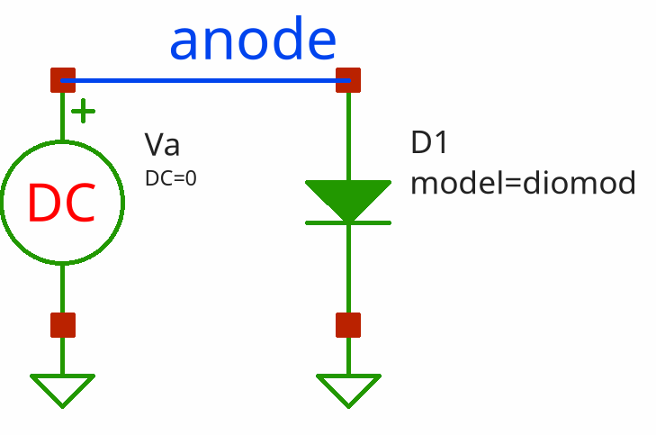

Examples
Examples in this section describes examples from folder examples in root directory of NgspiceTclBridge.
List of availible tutorials:
Parametric simulation - “examples/parametric_simulation.tcl” file
Parametric simulation
In this example we alter diode model parameter n (emission coefficient) and observe how diode IV curve is
changed from original.
First step is to provide path to Ngspice library. In Linux case it is usually saved under /usr/local/lib, for
Windows it depends on the installation prefix. Here we use the environmental variable NGSPICE_DLL to get the
location:
global env
if {$::tcl_platform(platform) eq {unix}} {
set ngspiceLibPath [file join $env(NGSPICE_DLL) libngspice.so]
} elseif {$::tcl_platform(platform) eq {windows}} {
set ngspiceLibPath [file join $env(NGSPICE_DLL) ngspice.dll]
}
The circuit we simulate is defined by string:
set circuit {Diode IV
d1 anode 0 diomod area=1 lm=1e-6
va anode 0 0
.model diomod d(is=1e-12 n=1.2 rs=0.01 cj0=1e-9 trs=0.001 xti=5 ikf=100)
.dc va 0 2 0.01
.temp 25
.end}

Be carefull: for correct usage you have to provide .end statement at the the end of the netlist.
Load ngspice library and initialize command for library control by ::ngspicetclbridge::new command:
set sim [ngspicetclbridge::new $ngspiceLibPath]
Load circuit into simulation with ::ngspicetclbridge::SIM circuit command:
$sim circuit -string $circuit
By default subcommand circuit accepts list of lines where each line contains one line of netlist, but switch
-string allows to pass circuit as a string with lines being delimited by newline symbol.
Add list of n parameter values we want to simulate:
set ns {0.8 0.9 1.0 1.1 1.2}
Then we run loop for each value of n, send altermod Ngspice command by ::ngspicetclbridge::SIM command,
run simulation by ::ngspicetclbridge::run command (procedure waits for the end of simulation), then
read vectors with ::ngspicetclbridge::SIM asyncvector command and prepare data for plotting:
foreach n $ns {
# change model parameter
$sim command "altermod diomod n = $n"
# run simulation and wait for the end
run $sim
# read result vectors and prepare for plotting
foreach x [$sim asyncvector anode] y [$sim asyncvector i(va)] {
set xf [format %.3f $x]
set yf [format %.3f [expr {-$y}]]
lappend xydata [list $xf $yf]
}
lappend dataList $xydata
unset xydata
}
Subcommand command send the string to Ngspice as is. In this case we send altermod command (see Ngspice
manual 13.5.4) that allows to alter parameter of particular model without resetting the circuit or
circuit reparsing.
The we use ticklecharts package to plot resulted curves:
set chart [ticklecharts::chart new]
$chart Xaxis -name {v(anode), V} -minorTick {show True} -type value -splitLine {show True}
$chart Yaxis -name {Idiode, A} -minorTick {show True} -type value -splitLine {show True}
$chart SetOptions -title {} -tooltip {trigger axis} -animation False -legend {}\
-toolbox {feature {dataZoom {yAxisIndex none}}} -grid {left 5% right 15%}
foreach data $dataList n $ns {
$chart Add lineSeries -data $data -showAllSymbol nothing -name n=$n -symbolSize 2
}
set fbasename [file rootname [file tail [info script]]]
$chart Render -outfile [file normalize [file join html_charts $fbasename.html]] -width 800px -height 500px\
-divid $fbasename -jschartvar chart_$fbasename -jsvar option_$fbasename
Copyright (c) George Yashin